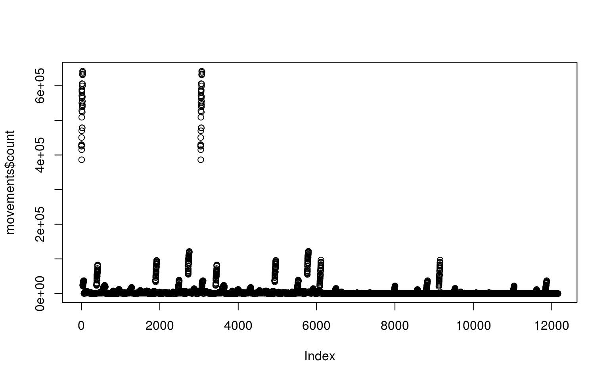
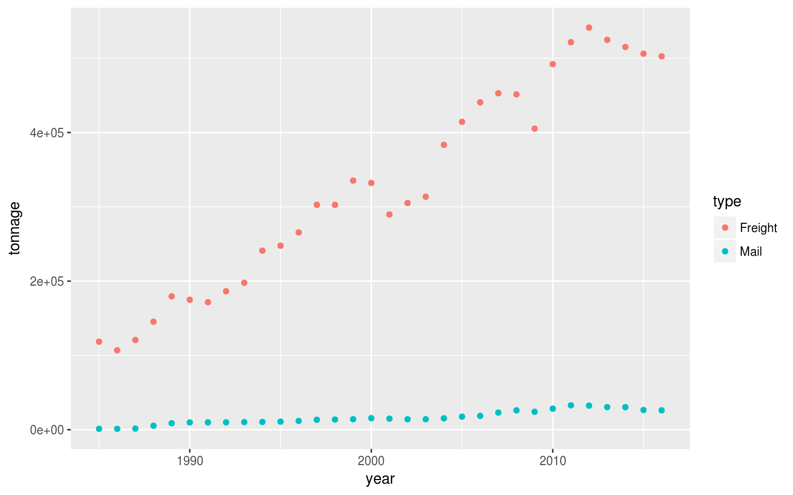
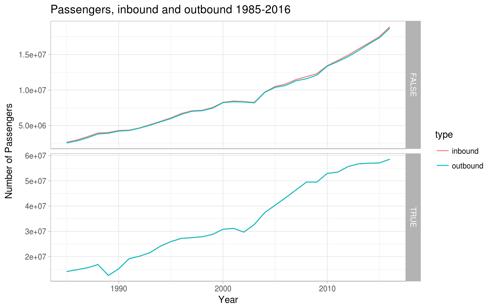
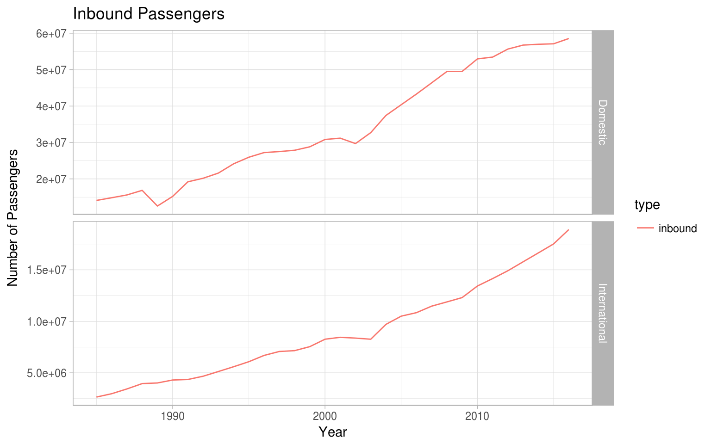

Ozflights - get the Australian flights data from 1985-2016
Maddie Davey, Steph de Silva, Mathew Ling, Nicholas Tierney, Adam Gruen
2017-10-27
knitr::opts_chunk$set(fig.width=8, fig.height=5) Welcome to Ozflights! Get the data for passenger, aircraft and international freight movements for both metropolitan and regional airports in Australia. The dataset covers 1985-2016.
Publication Notes:
This publication presents time series data on scheduled Regular Public Transport (RPT) services at selected Australian airports by calendar year over the period 1986 to 2016.
Coverage:
Data is derived from International and Domestic (including Regional) RPT services, and does not include charter or other non-scheduled activity. Data is presented on all Australian airports with more than 7,000 revenue passenger movements during 2016, except for Avalon Airport which is excluded for commercial-in-confidence reasons.
Information on revenue passengers and aircraft movements is provided for all airports that meet the criteria above. Freight and mail data is also provided for those airports receiving international services. Domestic mail and freight data has been excluded as the dataset is incomplete.
Basis for collection:
The data in this report is presented separately for International and Domestic (including Regional) airline sectors. International airlines are those airlines operating RPT services into or out of Australia. Domestic airlines are those operating RPT services between two Australian airports. From August 2013, statistics on Regional airlines can no longer be separately identified. Calendar year data including Regional airline data separately identified can be found in the file “Airport Traffic Data 1985 to 2012”.
International airline statistics are based on Uplift/Discharge. Uplift/Discharge (UD) data shows, by direction, the revenue traffic between the actual points of uplift and discharge within the same flight number, aggregated for all flights within the period.
Domestic (including Regional) airline data have been compiled using a combination of Uplift/Discharge and Traffic On Board (TOB) data. Traffic On Board: One flight stage refers to one take-off and landing. If a passenger’s journey involves more than one take-off and landing, then that passenger will be counted for each stage travelled. Traffic On Board statistics, therefore, reflect the number of revenue passengers to/from or via the particular airport.
Domestic passengers carried on domestic legs of international flights are not included in these statistics. However, for July 2011 and onwards domestic passengers carried on international flight numbers that operate only between domestic ports have been included. This change in reporting provides more accurate passenger traffic figures.
Revenue Passenger Definition:
Up to December 1999, international revenue passengers represented the aggregate of all passengers paying 25 per cent or more of the standard airfare (the ICAO definition of revenue passenger at that time). From January to July 2000, a broader definition of revenue passenger was introduced. Revenue passengers for international services now include all passengers excluding ‘free of charge’ passengers and positioning crew.
Revenue passengers for domestic and regional airline services are regarded as those paying any fare. Airlines also include passengers travelling on tickets acquired under the terms of frequent flyer schemes.
In this report, airport passenger movement numbers are the sum of passenger arrivals and departures at each airport for Regular Public Transport operations only. Each domestic passenger generates two passenger movements (a departure and an arrival). For example, a passenger flying from Melbourne to Sydney will be counted twice, as a passenger departure at Melbourne and a passenger arrival at Sydney. Each international passenger, however, generates only one passenger movement (either an arrival or a departure).
Other Points:
Rank for passenger movements is only shown for airports with 50,000 or more passenger movements a year.
Rank for aircraft movements is only shown for airports with 5,000 or more aircraft movements a year.
Rankings for airports that no longer meet the reporting criteria will not be included for prior years.
Domestic airline services were severely affected by the pilots’ dispute in 1989-90.
Domestic and Regional services for 2001 and 2002 were affected by the collapse of Ansett in September 2001.
Domestic freighter movements are partial from early 1990s to mid 2000s.
Virgin Australia entered the domestic market in 2000.
Jetstar entered the domestic market in 2004.
Tigerair Australia entered the domestic market in November 2007.
Figures may include estimates and figures for some airports for some years may not be complete.
Indemnity Statement:
The Bureau of Infrastructure, Transport and Regional Economics has taken due care in preparing this information. However, noting that data have been provided by third parties, the Commonwealth gives no warranty as to the accuracy, reliability, fitness for purpose, or otherwise of the information.
Copyright
© Commonwealth of Australia, 2017
This work is copyright and the data contained in this publication should not be reproduced or used in any form without acknowledgement.
Usage
The ozflights package gives you access to three data frames. These can be accessed with three simple functions.
Aircraft Movements
To access the data on aircraft movements, use the function aircraft_movements():
movements <- ozflights::aircraft_movements()Now let’s have a look in our data frame. Use str(movements) to understand the structure of our tibble.
str(movements)## Classes 'tbl_df', 'tbl' and 'data.frame': 12160 obs. of 5 variables:
## $ airport: chr "TOTAL AUSTRALIA" "TOTAL AUSTRALIA" "TOTAL AUSTRALIA" "TOTAL AUSTRALIA" ...
## $ year : num 1985 1986 1987 1988 1989 ...
## $ type : chr "inbound" "inbound" "inbound" "inbound" ...
## $ count : num 425190 427697 429860 450392 386229 ...
## $ domest : logi TRUE TRUE TRUE TRUE TRUE TRUE ...But we can also use head to see what’s in the top.
head(movements)## # A tibble: 6 x 5
## airport year type count domest
## <chr> <dbl> <chr> <dbl> <lgl>
## 1 TOTAL AUSTRALIA 1985 inbound 425190 TRUE
## 2 TOTAL AUSTRALIA 1986 inbound 427697 TRUE
## 3 TOTAL AUSTRALIA 1987 inbound 429860 TRUE
## 4 TOTAL AUSTRALIA 1988 inbound 450392 TRUE
## 5 TOTAL AUSTRALIA 1989 inbound 386229 TRUE
## 6 TOTAL AUSTRALIA 1990 inbound 415175 TRUEWe can also use tail() to see the bottom.
tail(movements)## # A tibble: 6 x 5
## airport year type count domest
## <chr> <dbl> <chr> <dbl> <lgl>
## 1 WILLIAMTOWN 2011 outbound 0 FALSE
## 2 WILLIAMTOWN 2012 outbound 0 FALSE
## 3 WILLIAMTOWN 2013 outbound 0 FALSE
## 4 WILLIAMTOWN 2014 outbound 0 FALSE
## 5 WILLIAMTOWN 2015 outbound 0 FALSE
## 6 WILLIAMTOWN 2016 outbound 0 FALSEUse the option n = [an integer] to see more/less in both head or tail:
head(movements, n = 2)## # A tibble: 2 x 5
## airport year type count domest
## <chr> <dbl> <chr> <dbl> <lgl>
## 1 TOTAL AUSTRALIA 1985 inbound 425190 TRUE
## 2 TOTAL AUSTRALIA 1986 inbound 427697 TRUEtail(movements, n = 3)## # A tibble: 3 x 5
## airport year type count domest
## <chr> <dbl> <chr> <dbl> <lgl>
## 1 WILLIAMTOWN 2014 outbound 0 FALSE
## 2 WILLIAMTOWN 2015 outbound 0 FALSE
## 3 WILLIAMTOWN 2016 outbound 0 FALSELet’s plot aircraft movements. We should change the year to a date-time object because there is inherent ordering in this data:
movements <- ozflights::aircraft_movements()
movements$year <- lubridate::make_date(movements$year)Now let’s try a simple plot!
plot(movements$count)
There are a few bigguns in there (this is an Australianism, sorry). Let’s look at why that is, let’s just look at the total movements in Australia for each year with dplyr::filter:
movements_aus <- dplyr::filter(movements, airport == "TOTAL AUSTRALIA")How many observations fit this description?
str(movements_aus)## Classes 'tbl_df', 'tbl' and 'data.frame': 128 obs. of 5 variables:
## $ airport: chr "TOTAL AUSTRALIA" "TOTAL AUSTRALIA" "TOTAL AUSTRALIA" "TOTAL AUSTRALIA" ...
## $ year : Date, format: "1985-01-01" "1986-01-01" ...
## $ type : chr "inbound" "inbound" "inbound" "inbound" ...
## $ count : num 425190 427697 429860 450392 386229 ...
## $ domest : logi TRUE TRUE TRUE TRUE TRUE TRUE ...Now let’s look at the totals with head():
head(movements_aus)## # A tibble: 6 x 5
## airport year type count domest
## <chr> <date> <chr> <dbl> <lgl>
## 1 TOTAL AUSTRALIA 1985-01-01 inbound 425190 TRUE
## 2 TOTAL AUSTRALIA 1986-01-01 inbound 427697 TRUE
## 3 TOTAL AUSTRALIA 1987-01-01 inbound 429860 TRUE
## 4 TOTAL AUSTRALIA 1988-01-01 inbound 450392 TRUE
## 5 TOTAL AUSTRALIA 1989-01-01 inbound 386229 TRUE
## 6 TOTAL AUSTRALIA 1990-01-01 inbound 415175 TRUEPro tip! Do you have any missing variables? If you’re lucky, these are coded as NA. Try looking at the count variable in movements_aus. We can use the count() function combined with is.na() to count how many missing values there may be. Pro tip: sometimes variables get names similar to functions. The function is the one with () after it. The variable may be attached to a dataframe or tibble, in which case it can be accessed by using $ operator as in movements_aus$count.
From the inside out: - We are looking at the count variable in the movements_aus tibble. - we are checking which ones are NA - we are counting them using sum().
sum(is.na(movements_aus$count))## [1] 0None missing. Yeah!
We have both inbound and outbound flights. But we don’t want to try and analyse those together- it wouldn’t make sense. Let’s create two new dataframes: movements_aus_in and movements_aus_out using dplyr::filter() again:
movements_aus_in <- dplyr::filter(movements_aus, type == "inbound")
movements_aus_out <- dplyr::filter(movements_aus, type == "outbound")Pro tip: note how we’re using == in the filter function. This is how we match things in R when making comparisons. (OK, there’s more to it than that, but you get the idea!) Other comparison operators include not equals !=, less than <, less than OR equals to <=, greater than > and greater than or equals to >=.
Let’s have a look at inbound totals:
plot(movements_aus_in$count)
This plot is a little confusing It doesn’t account for the fact that these observations are time-dependent- the order that they arrived in matters, but the dataframe isn’t necessarily ordered in that way (though we could change that). It also includes both domestic and international movements.
Let’s step up our plotting game here using ggplot to tease out the differences between domestic (domest == TRUE) and international (domest == FALSE)
library(ggplot2)
ggplot(movements_aus_in)+
geom_point(aes(year,count, colour = domest))
International Airfreight
Note that only international airfreight data is available in this dataset. Unlike aircraft and passenger movements, which are both international and domestic.
To access this data, use the function `international_freight()’:
airfreight <- ozflights::international_freight()OK so we’ve done all this before, let’s start using the basics of ‘what is in my dataframe?’: - head() - what are my variables? Are they the right type? Does it match the start of my datasource, or did I pull it into R starting at the wrong point? I do this by visual inspection with the original file most of the time. - tail()- did my file stop reading at the right place? Or did it keep going with a bunch of rubbish for some reason. Yes this happens more than you’d hope. Does it have the right number of rows compared to the original file? - ’str()` - what’s in there? Did its type change compared to what I was expecting? Do I have strings where I wanted factors (probably the other way around). Often, if there is a missing value error code, R will read the entire column of what should be numbers as characters. So you will need to convert!
Let’s do ’em all here.
head(airfreight)## # A tibble: 6 x 5
## airport year direction tonnage type
## <chr> <dbl> <chr> <dbl> <chr>
## 1 TOTAL AUSTRALIA 1985 inbound 118478.1 Freight
## 2 TOTAL AUSTRALIA 1986 inbound 106913.5 Freight
## 3 TOTAL AUSTRALIA 1987 inbound 120715.6 Freight
## 4 TOTAL AUSTRALIA 1988 inbound 145316.3 Freight
## 5 TOTAL AUSTRALIA 1989 inbound 179555.7 Freight
## 6 TOTAL AUSTRALIA 1990 inbound 174933.1 Freighttail(airfreight)## # A tibble: 6 x 5
## airport year direction tonnage type
## <chr> <dbl> <chr> <dbl> <chr>
## 1 WILLIAMTOWN 2011 outbound 0 Mail
## 2 WILLIAMTOWN 2012 outbound 0 Mail
## 3 WILLIAMTOWN 2013 outbound 0 Mail
## 4 WILLIAMTOWN 2014 outbound 0 Mail
## 5 WILLIAMTOWN 2015 outbound 0 Mail
## 6 WILLIAMTOWN 2016 outbound 0 Mailstr(airfreight)## Classes 'tbl_df', 'tbl' and 'data.frame': 2432 obs. of 5 variables:
## $ airport : chr "TOTAL AUSTRALIA" "TOTAL AUSTRALIA" "TOTAL AUSTRALIA" "TOTAL AUSTRALIA" ...
## $ year : num 1985 1986 1987 1988 1989 ...
## $ direction: chr "inbound" "inbound" "inbound" "inbound" ...
## $ tonnage : num 118478 106914 120716 145316 179556 ...
## $ type : chr "Freight" "Freight" "Freight" "Freight" ...Let’s take a look at the variable type:
unique(airfreight$type)## [1] "Freight" "Mail"This lends itself to being considered a factor. Let’s make it one!
airfreight$type <- base::as.factor(airfreight$type)How much is freight and how much mail? Let’s look at it over time, but first we need to turn the year variable into a time object with lubridate: lubridate::make_date(airfreight$year).
lubridate::make_date(airfreight$year)## [1] "1985-01-01" "1986-01-01" "1987-01-01" "1988-01-01" "1989-01-01"
## [6] "1990-01-01" "1991-01-01" "1992-01-01" "1993-01-01" "1994-01-01"
## [11] "1995-01-01" "1996-01-01" "1997-01-01" "1998-01-01" "1999-01-01"
## [16] "2000-01-01" "2001-01-01" "2002-01-01" "2003-01-01" "2004-01-01"
## [21] "2005-01-01" "2006-01-01" "2007-01-01" "2008-01-01" "2009-01-01"
## [26] "2010-01-01" "2011-01-01" "2012-01-01" "2013-01-01" "2014-01-01"
## [31] "2015-01-01" "2016-01-01" "1985-01-01" "1986-01-01" "1987-01-01"
## [36] "1988-01-01" "1989-01-01" "1990-01-01" "1991-01-01" "1992-01-01"
## [41] "1993-01-01" "1994-01-01" "1995-01-01" "1996-01-01" "1997-01-01"
## [46] "1998-01-01" "1999-01-01" "2000-01-01" "2001-01-01" "2002-01-01"
## [51] "2003-01-01" "2004-01-01" "2005-01-01" "2006-01-01" "2007-01-01"
## [56] "2008-01-01" "2009-01-01" "2010-01-01" "2011-01-01" "2012-01-01"
## [61] "2013-01-01" "2014-01-01" "2015-01-01" "2016-01-01" "1985-01-01"
## [66] "1986-01-01" "1987-01-01" "1988-01-01" "1989-01-01" "1990-01-01"
## [71] "1991-01-01" "1992-01-01" "1993-01-01" "1994-01-01" "1995-01-01"
## [76] "1996-01-01" "1997-01-01" "1998-01-01" "1999-01-01" "2000-01-01"
## [81] "2001-01-01" "2002-01-01" "2003-01-01" "2004-01-01" "2005-01-01"
## [86] "2006-01-01" "2007-01-01" "2008-01-01" "2009-01-01" "2010-01-01"
## [91] "2011-01-01" "2012-01-01" "2013-01-01" "2014-01-01" "2015-01-01"
## [96] "2016-01-01" "1985-01-01" "1986-01-01" "1987-01-01" "1988-01-01"
## [101] "1989-01-01" "1990-01-01" "1991-01-01" "1992-01-01" "1993-01-01"
## [106] "1994-01-01" "1995-01-01" "1996-01-01" "1997-01-01" "1998-01-01"
## [111] "1999-01-01" "2000-01-01" "2001-01-01" "2002-01-01" "2003-01-01"
## [116] "2004-01-01" "2005-01-01" "2006-01-01" "2007-01-01" "2008-01-01"
## [121] "2009-01-01" "2010-01-01" "2011-01-01" "2012-01-01" "2013-01-01"
## [126] "2014-01-01" "2015-01-01" "2016-01-01" "1985-01-01" "1986-01-01"
## [131] "1987-01-01" "1988-01-01" "1989-01-01" "1990-01-01" "1991-01-01"
## [136] "1992-01-01" "1993-01-01" "1994-01-01" "1995-01-01" "1996-01-01"
## [141] "1997-01-01" "1998-01-01" "1999-01-01" "2000-01-01" "2001-01-01"
## [146] "2002-01-01" "2003-01-01" "2004-01-01" "2005-01-01" "2006-01-01"
## [151] "2007-01-01" "2008-01-01" "2009-01-01" "2010-01-01" "2011-01-01"
## [156] "2012-01-01" "2013-01-01" "2014-01-01" "2015-01-01" "2016-01-01"
## [161] "1985-01-01" "1986-01-01" "1987-01-01" "1988-01-01" "1989-01-01"
## [166] "1990-01-01" "1991-01-01" "1992-01-01" "1993-01-01" "1994-01-01"
## [171] "1995-01-01" "1996-01-01" "1997-01-01" "1998-01-01" "1999-01-01"
## [176] "2000-01-01" "2001-01-01" "2002-01-01" "2003-01-01" "2004-01-01"
## [181] "2005-01-01" "2006-01-01" "2007-01-01" "2008-01-01" "2009-01-01"
## [186] "2010-01-01" "2011-01-01" "2012-01-01" "2013-01-01" "2014-01-01"
## [191] "2015-01-01" "2016-01-01" "1985-01-01" "1986-01-01" "1987-01-01"
## [196] "1988-01-01" "1989-01-01" "1990-01-01" "1991-01-01" "1992-01-01"
## [201] "1993-01-01" "1994-01-01" "1995-01-01" "1996-01-01" "1997-01-01"
## [206] "1998-01-01" "1999-01-01" "2000-01-01" "2001-01-01" "2002-01-01"
## [211] "2003-01-01" "2004-01-01" "2005-01-01" "2006-01-01" "2007-01-01"
## [216] "2008-01-01" "2009-01-01" "2010-01-01" "2011-01-01" "2012-01-01"
## [221] "2013-01-01" "2014-01-01" "2015-01-01" "2016-01-01" "1985-01-01"
## [226] "1986-01-01" "1987-01-01" "1988-01-01" "1989-01-01" "1990-01-01"
## [231] "1991-01-01" "1992-01-01" "1993-01-01" "1994-01-01" "1995-01-01"
## [236] "1996-01-01" "1997-01-01" "1998-01-01" "1999-01-01" "2000-01-01"
## [241] "2001-01-01" "2002-01-01" "2003-01-01" "2004-01-01" "2005-01-01"
## [246] "2006-01-01" "2007-01-01" "2008-01-01" "2009-01-01" "2010-01-01"
## [251] "2011-01-01" "2012-01-01" "2013-01-01" "2014-01-01" "2015-01-01"
## [256] "2016-01-01" "1985-01-01" "1986-01-01" "1987-01-01" "1988-01-01"
## [261] "1989-01-01" "1990-01-01" "1991-01-01" "1992-01-01" "1993-01-01"
## [266] "1994-01-01" "1995-01-01" "1996-01-01" "1997-01-01" "1998-01-01"
## [271] "1999-01-01" "2000-01-01" "2001-01-01" "2002-01-01" "2003-01-01"
## [276] "2004-01-01" "2005-01-01" "2006-01-01" "2007-01-01" "2008-01-01"
## [281] "2009-01-01" "2010-01-01" "2011-01-01" "2012-01-01" "2013-01-01"
## [286] "2014-01-01" "2015-01-01" "2016-01-01" "1985-01-01" "1986-01-01"
## [291] "1987-01-01" "1988-01-01" "1989-01-01" "1990-01-01" "1991-01-01"
## [296] "1992-01-01" "1993-01-01" "1994-01-01" "1995-01-01" "1996-01-01"
## [301] "1997-01-01" "1998-01-01" "1999-01-01" "2000-01-01" "2001-01-01"
## [306] "2002-01-01" "2003-01-01" "2004-01-01" "2005-01-01" "2006-01-01"
## [311] "2007-01-01" "2008-01-01" "2009-01-01" "2010-01-01" "2011-01-01"
## [316] "2012-01-01" "2013-01-01" "2014-01-01" "2015-01-01" "2016-01-01"
## [321] "1985-01-01" "1986-01-01" "1987-01-01" "1988-01-01" "1989-01-01"
## [326] "1990-01-01" "1991-01-01" "1992-01-01" "1993-01-01" "1994-01-01"
## [331] "1995-01-01" "1996-01-01" "1997-01-01" "1998-01-01" "1999-01-01"
## [336] "2000-01-01" "2001-01-01" "2002-01-01" "2003-01-01" "2004-01-01"
## [341] "2005-01-01" "2006-01-01" "2007-01-01" "2008-01-01" "2009-01-01"
## [346] "2010-01-01" "2011-01-01" "2012-01-01" "2013-01-01" "2014-01-01"
## [351] "2015-01-01" "2016-01-01" "1985-01-01" "1986-01-01" "1987-01-01"
## [356] "1988-01-01" "1989-01-01" "1990-01-01" "1991-01-01" "1992-01-01"
## [361] "1993-01-01" "1994-01-01" "1995-01-01" "1996-01-01" "1997-01-01"
## [366] "1998-01-01" "1999-01-01" "2000-01-01" "2001-01-01" "2002-01-01"
## [371] "2003-01-01" "2004-01-01" "2005-01-01" "2006-01-01" "2007-01-01"
## [376] "2008-01-01" "2009-01-01" "2010-01-01" "2011-01-01" "2012-01-01"
## [381] "2013-01-01" "2014-01-01" "2015-01-01" "2016-01-01" "1985-01-01"
## [386] "1986-01-01" "1987-01-01" "1988-01-01" "1989-01-01" "1990-01-01"
## [391] "1991-01-01" "1992-01-01" "1993-01-01" "1994-01-01" "1995-01-01"
## [396] "1996-01-01" "1997-01-01" "1998-01-01" "1999-01-01" "2000-01-01"
## [401] "2001-01-01" "2002-01-01" "2003-01-01" "2004-01-01" "2005-01-01"
## [406] "2006-01-01" "2007-01-01" "2008-01-01" "2009-01-01" "2010-01-01"
## [411] "2011-01-01" "2012-01-01" "2013-01-01" "2014-01-01" "2015-01-01"
## [416] "2016-01-01" "1985-01-01" "1986-01-01" "1987-01-01" "1988-01-01"
## [421] "1989-01-01" "1990-01-01" "1991-01-01" "1992-01-01" "1993-01-01"
## [426] "1994-01-01" "1995-01-01" "1996-01-01" "1997-01-01" "1998-01-01"
## [431] "1999-01-01" "2000-01-01" "2001-01-01" "2002-01-01" "2003-01-01"
## [436] "2004-01-01" "2005-01-01" "2006-01-01" "2007-01-01" "2008-01-01"
## [441] "2009-01-01" "2010-01-01" "2011-01-01" "2012-01-01" "2013-01-01"
## [446] "2014-01-01" "2015-01-01" "2016-01-01" "1985-01-01" "1986-01-01"
## [451] "1987-01-01" "1988-01-01" "1989-01-01" "1990-01-01" "1991-01-01"
## [456] "1992-01-01" "1993-01-01" "1994-01-01" "1995-01-01" "1996-01-01"
## [461] "1997-01-01" "1998-01-01" "1999-01-01" "2000-01-01" "2001-01-01"
## [466] "2002-01-01" "2003-01-01" "2004-01-01" "2005-01-01" "2006-01-01"
## [471] "2007-01-01" "2008-01-01" "2009-01-01" "2010-01-01" "2011-01-01"
## [476] "2012-01-01" "2013-01-01" "2014-01-01" "2015-01-01" "2016-01-01"
## [481] "1985-01-01" "1986-01-01" "1987-01-01" "1988-01-01" "1989-01-01"
## [486] "1990-01-01" "1991-01-01" "1992-01-01" "1993-01-01" "1994-01-01"
## [491] "1995-01-01" "1996-01-01" "1997-01-01" "1998-01-01" "1999-01-01"
## [496] "2000-01-01" "2001-01-01" "2002-01-01" "2003-01-01" "2004-01-01"
## [501] "2005-01-01" "2006-01-01" "2007-01-01" "2008-01-01" "2009-01-01"
## [506] "2010-01-01" "2011-01-01" "2012-01-01" "2013-01-01" "2014-01-01"
## [511] "2015-01-01" "2016-01-01" "1985-01-01" "1986-01-01" "1987-01-01"
## [516] "1988-01-01" "1989-01-01" "1990-01-01" "1991-01-01" "1992-01-01"
## [521] "1993-01-01" "1994-01-01" "1995-01-01" "1996-01-01" "1997-01-01"
## [526] "1998-01-01" "1999-01-01" "2000-01-01" "2001-01-01" "2002-01-01"
## [531] "2003-01-01" "2004-01-01" "2005-01-01" "2006-01-01" "2007-01-01"
## [536] "2008-01-01" "2009-01-01" "2010-01-01" "2011-01-01" "2012-01-01"
## [541] "2013-01-01" "2014-01-01" "2015-01-01" "2016-01-01" "1985-01-01"
## [546] "1986-01-01" "1987-01-01" "1988-01-01" "1989-01-01" "1990-01-01"
## [551] "1991-01-01" "1992-01-01" "1993-01-01" "1994-01-01" "1995-01-01"
## [556] "1996-01-01" "1997-01-01" "1998-01-01" "1999-01-01" "2000-01-01"
## [561] "2001-01-01" "2002-01-01" "2003-01-01" "2004-01-01" "2005-01-01"
## [566] "2006-01-01" "2007-01-01" "2008-01-01" "2009-01-01" "2010-01-01"
## [571] "2011-01-01" "2012-01-01" "2013-01-01" "2014-01-01" "2015-01-01"
## [576] "2016-01-01" "1985-01-01" "1986-01-01" "1987-01-01" "1988-01-01"
## [581] "1989-01-01" "1990-01-01" "1991-01-01" "1992-01-01" "1993-01-01"
## [586] "1994-01-01" "1995-01-01" "1996-01-01" "1997-01-01" "1998-01-01"
## [591] "1999-01-01" "2000-01-01" "2001-01-01" "2002-01-01" "2003-01-01"
## [596] "2004-01-01" "2005-01-01" "2006-01-01" "2007-01-01" "2008-01-01"
## [601] "2009-01-01" "2010-01-01" "2011-01-01" "2012-01-01" "2013-01-01"
## [606] "2014-01-01" "2015-01-01" "2016-01-01" "1985-01-01" "1986-01-01"
## [611] "1987-01-01" "1988-01-01" "1989-01-01" "1990-01-01" "1991-01-01"
## [616] "1992-01-01" "1993-01-01" "1994-01-01" "1995-01-01" "1996-01-01"
## [621] "1997-01-01" "1998-01-01" "1999-01-01" "2000-01-01" "2001-01-01"
## [626] "2002-01-01" "2003-01-01" "2004-01-01" "2005-01-01" "2006-01-01"
## [631] "2007-01-01" "2008-01-01" "2009-01-01" "2010-01-01" "2011-01-01"
## [636] "2012-01-01" "2013-01-01" "2014-01-01" "2015-01-01" "2016-01-01"
## [641] "1985-01-01" "1986-01-01" "1987-01-01" "1988-01-01" "1989-01-01"
## [646] "1990-01-01" "1991-01-01" "1992-01-01" "1993-01-01" "1994-01-01"
## [651] "1995-01-01" "1996-01-01" "1997-01-01" "1998-01-01" "1999-01-01"
## [656] "2000-01-01" "2001-01-01" "2002-01-01" "2003-01-01" "2004-01-01"
## [661] "2005-01-01" "2006-01-01" "2007-01-01" "2008-01-01" "2009-01-01"
## [666] "2010-01-01" "2011-01-01" "2012-01-01" "2013-01-01" "2014-01-01"
## [671] "2015-01-01" "2016-01-01" "1985-01-01" "1986-01-01" "1987-01-01"
## [676] "1988-01-01" "1989-01-01" "1990-01-01" "1991-01-01" "1992-01-01"
## [681] "1993-01-01" "1994-01-01" "1995-01-01" "1996-01-01" "1997-01-01"
## [686] "1998-01-01" "1999-01-01" "2000-01-01" "2001-01-01" "2002-01-01"
## [691] "2003-01-01" "2004-01-01" "2005-01-01" "2006-01-01" "2007-01-01"
## [696] "2008-01-01" "2009-01-01" "2010-01-01" "2011-01-01" "2012-01-01"
## [701] "2013-01-01" "2014-01-01" "2015-01-01" "2016-01-01" "1985-01-01"
## [706] "1986-01-01" "1987-01-01" "1988-01-01" "1989-01-01" "1990-01-01"
## [711] "1991-01-01" "1992-01-01" "1993-01-01" "1994-01-01" "1995-01-01"
## [716] "1996-01-01" "1997-01-01" "1998-01-01" "1999-01-01" "2000-01-01"
## [721] "2001-01-01" "2002-01-01" "2003-01-01" "2004-01-01" "2005-01-01"
## [726] "2006-01-01" "2007-01-01" "2008-01-01" "2009-01-01" "2010-01-01"
## [731] "2011-01-01" "2012-01-01" "2013-01-01" "2014-01-01" "2015-01-01"
## [736] "2016-01-01" "1985-01-01" "1986-01-01" "1987-01-01" "1988-01-01"
## [741] "1989-01-01" "1990-01-01" "1991-01-01" "1992-01-01" "1993-01-01"
## [746] "1994-01-01" "1995-01-01" "1996-01-01" "1997-01-01" "1998-01-01"
## [751] "1999-01-01" "2000-01-01" "2001-01-01" "2002-01-01" "2003-01-01"
## [756] "2004-01-01" "2005-01-01" "2006-01-01" "2007-01-01" "2008-01-01"
## [761] "2009-01-01" "2010-01-01" "2011-01-01" "2012-01-01" "2013-01-01"
## [766] "2014-01-01" "2015-01-01" "2016-01-01" "1985-01-01" "1986-01-01"
## [771] "1987-01-01" "1988-01-01" "1989-01-01" "1990-01-01" "1991-01-01"
## [776] "1992-01-01" "1993-01-01" "1994-01-01" "1995-01-01" "1996-01-01"
## [781] "1997-01-01" "1998-01-01" "1999-01-01" "2000-01-01" "2001-01-01"
## [786] "2002-01-01" "2003-01-01" "2004-01-01" "2005-01-01" "2006-01-01"
## [791] "2007-01-01" "2008-01-01" "2009-01-01" "2010-01-01" "2011-01-01"
## [796] "2012-01-01" "2013-01-01" "2014-01-01" "2015-01-01" "2016-01-01"
## [801] "1985-01-01" "1986-01-01" "1987-01-01" "1988-01-01" "1989-01-01"
## [806] "1990-01-01" "1991-01-01" "1992-01-01" "1993-01-01" "1994-01-01"
## [811] "1995-01-01" "1996-01-01" "1997-01-01" "1998-01-01" "1999-01-01"
## [816] "2000-01-01" "2001-01-01" "2002-01-01" "2003-01-01" "2004-01-01"
## [821] "2005-01-01" "2006-01-01" "2007-01-01" "2008-01-01" "2009-01-01"
## [826] "2010-01-01" "2011-01-01" "2012-01-01" "2013-01-01" "2014-01-01"
## [831] "2015-01-01" "2016-01-01" "1985-01-01" "1986-01-01" "1987-01-01"
## [836] "1988-01-01" "1989-01-01" "1990-01-01" "1991-01-01" "1992-01-01"
## [841] "1993-01-01" "1994-01-01" "1995-01-01" "1996-01-01" "1997-01-01"
## [846] "1998-01-01" "1999-01-01" "2000-01-01" "2001-01-01" "2002-01-01"
## [851] "2003-01-01" "2004-01-01" "2005-01-01" "2006-01-01" "2007-01-01"
## [856] "2008-01-01" "2009-01-01" "2010-01-01" "2011-01-01" "2012-01-01"
## [861] "2013-01-01" "2014-01-01" "2015-01-01" "2016-01-01" "1985-01-01"
## [866] "1986-01-01" "1987-01-01" "1988-01-01" "1989-01-01" "1990-01-01"
## [871] "1991-01-01" "1992-01-01" "1993-01-01" "1994-01-01" "1995-01-01"
## [876] "1996-01-01" "1997-01-01" "1998-01-01" "1999-01-01" "2000-01-01"
## [881] "2001-01-01" "2002-01-01" "2003-01-01" "2004-01-01" "2005-01-01"
## [886] "2006-01-01" "2007-01-01" "2008-01-01" "2009-01-01" "2010-01-01"
## [891] "2011-01-01" "2012-01-01" "2013-01-01" "2014-01-01" "2015-01-01"
## [896] "2016-01-01" "1985-01-01" "1986-01-01" "1987-01-01" "1988-01-01"
## [901] "1989-01-01" "1990-01-01" "1991-01-01" "1992-01-01" "1993-01-01"
## [906] "1994-01-01" "1995-01-01" "1996-01-01" "1997-01-01" "1998-01-01"
## [911] "1999-01-01" "2000-01-01" "2001-01-01" "2002-01-01" "2003-01-01"
## [916] "2004-01-01" "2005-01-01" "2006-01-01" "2007-01-01" "2008-01-01"
## [921] "2009-01-01" "2010-01-01" "2011-01-01" "2012-01-01" "2013-01-01"
## [926] "2014-01-01" "2015-01-01" "2016-01-01" "1985-01-01" "1986-01-01"
## [931] "1987-01-01" "1988-01-01" "1989-01-01" "1990-01-01" "1991-01-01"
## [936] "1992-01-01" "1993-01-01" "1994-01-01" "1995-01-01" "1996-01-01"
## [941] "1997-01-01" "1998-01-01" "1999-01-01" "2000-01-01" "2001-01-01"
## [946] "2002-01-01" "2003-01-01" "2004-01-01" "2005-01-01" "2006-01-01"
## [951] "2007-01-01" "2008-01-01" "2009-01-01" "2010-01-01" "2011-01-01"
## [956] "2012-01-01" "2013-01-01" "2014-01-01" "2015-01-01" "2016-01-01"
## [961] "1985-01-01" "1986-01-01" "1987-01-01" "1988-01-01" "1989-01-01"
## [966] "1990-01-01" "1991-01-01" "1992-01-01" "1993-01-01" "1994-01-01"
## [971] "1995-01-01" "1996-01-01" "1997-01-01" "1998-01-01" "1999-01-01"
## [976] "2000-01-01" "2001-01-01" "2002-01-01" "2003-01-01" "2004-01-01"
## [981] "2005-01-01" "2006-01-01" "2007-01-01" "2008-01-01" "2009-01-01"
## [986] "2010-01-01" "2011-01-01" "2012-01-01" "2013-01-01" "2014-01-01"
## [991] "2015-01-01" "2016-01-01" "1985-01-01" "1986-01-01" "1987-01-01"
## [996] "1988-01-01" "1989-01-01" "1990-01-01" "1991-01-01" "1992-01-01"
## [1001] "1993-01-01" "1994-01-01" "1995-01-01" "1996-01-01" "1997-01-01"
## [1006] "1998-01-01" "1999-01-01" "2000-01-01" "2001-01-01" "2002-01-01"
## [1011] "2003-01-01" "2004-01-01" "2005-01-01" "2006-01-01" "2007-01-01"
## [1016] "2008-01-01" "2009-01-01" "2010-01-01" "2011-01-01" "2012-01-01"
## [1021] "2013-01-01" "2014-01-01" "2015-01-01" "2016-01-01" "1985-01-01"
## [1026] "1986-01-01" "1987-01-01" "1988-01-01" "1989-01-01" "1990-01-01"
## [1031] "1991-01-01" "1992-01-01" "1993-01-01" "1994-01-01" "1995-01-01"
## [1036] "1996-01-01" "1997-01-01" "1998-01-01" "1999-01-01" "2000-01-01"
## [1041] "2001-01-01" "2002-01-01" "2003-01-01" "2004-01-01" "2005-01-01"
## [1046] "2006-01-01" "2007-01-01" "2008-01-01" "2009-01-01" "2010-01-01"
## [1051] "2011-01-01" "2012-01-01" "2013-01-01" "2014-01-01" "2015-01-01"
## [1056] "2016-01-01" "1985-01-01" "1986-01-01" "1987-01-01" "1988-01-01"
## [1061] "1989-01-01" "1990-01-01" "1991-01-01" "1992-01-01" "1993-01-01"
## [1066] "1994-01-01" "1995-01-01" "1996-01-01" "1997-01-01" "1998-01-01"
## [1071] "1999-01-01" "2000-01-01" "2001-01-01" "2002-01-01" "2003-01-01"
## [1076] "2004-01-01" "2005-01-01" "2006-01-01" "2007-01-01" "2008-01-01"
## [1081] "2009-01-01" "2010-01-01" "2011-01-01" "2012-01-01" "2013-01-01"
## [1086] "2014-01-01" "2015-01-01" "2016-01-01" "1985-01-01" "1986-01-01"
## [1091] "1987-01-01" "1988-01-01" "1989-01-01" "1990-01-01" "1991-01-01"
## [1096] "1992-01-01" "1993-01-01" "1994-01-01" "1995-01-01" "1996-01-01"
## [1101] "1997-01-01" "1998-01-01" "1999-01-01" "2000-01-01" "2001-01-01"
## [1106] "2002-01-01" "2003-01-01" "2004-01-01" "2005-01-01" "2006-01-01"
## [1111] "2007-01-01" "2008-01-01" "2009-01-01" "2010-01-01" "2011-01-01"
## [1116] "2012-01-01" "2013-01-01" "2014-01-01" "2015-01-01" "2016-01-01"
## [1121] "1985-01-01" "1986-01-01" "1987-01-01" "1988-01-01" "1989-01-01"
## [1126] "1990-01-01" "1991-01-01" "1992-01-01" "1993-01-01" "1994-01-01"
## [1131] "1995-01-01" "1996-01-01" "1997-01-01" "1998-01-01" "1999-01-01"
## [1136] "2000-01-01" "2001-01-01" "2002-01-01" "2003-01-01" "2004-01-01"
## [1141] "2005-01-01" "2006-01-01" "2007-01-01" "2008-01-01" "2009-01-01"
## [1146] "2010-01-01" "2011-01-01" "2012-01-01" "2013-01-01" "2014-01-01"
## [1151] "2015-01-01" "2016-01-01" "1985-01-01" "1986-01-01" "1987-01-01"
## [1156] "1988-01-01" "1989-01-01" "1990-01-01" "1991-01-01" "1992-01-01"
## [1161] "1993-01-01" "1994-01-01" "1995-01-01" "1996-01-01" "1997-01-01"
## [1166] "1998-01-01" "1999-01-01" "2000-01-01" "2001-01-01" "2002-01-01"
## [1171] "2003-01-01" "2004-01-01" "2005-01-01" "2006-01-01" "2007-01-01"
## [1176] "2008-01-01" "2009-01-01" "2010-01-01" "2011-01-01" "2012-01-01"
## [1181] "2013-01-01" "2014-01-01" "2015-01-01" "2016-01-01" "1985-01-01"
## [1186] "1986-01-01" "1987-01-01" "1988-01-01" "1989-01-01" "1990-01-01"
## [1191] "1991-01-01" "1992-01-01" "1993-01-01" "1994-01-01" "1995-01-01"
## [1196] "1996-01-01" "1997-01-01" "1998-01-01" "1999-01-01" "2000-01-01"
## [1201] "2001-01-01" "2002-01-01" "2003-01-01" "2004-01-01" "2005-01-01"
## [1206] "2006-01-01" "2007-01-01" "2008-01-01" "2009-01-01" "2010-01-01"
## [1211] "2011-01-01" "2012-01-01" "2013-01-01" "2014-01-01" "2015-01-01"
## [1216] "2016-01-01" "1985-01-01" "1986-01-01" "1987-01-01" "1988-01-01"
## [1221] "1989-01-01" "1990-01-01" "1991-01-01" "1992-01-01" "1993-01-01"
## [1226] "1994-01-01" "1995-01-01" "1996-01-01" "1997-01-01" "1998-01-01"
## [1231] "1999-01-01" "2000-01-01" "2001-01-01" "2002-01-01" "2003-01-01"
## [1236] "2004-01-01" "2005-01-01" "2006-01-01" "2007-01-01" "2008-01-01"
## [1241] "2009-01-01" "2010-01-01" "2011-01-01" "2012-01-01" "2013-01-01"
## [1246] "2014-01-01" "2015-01-01" "2016-01-01" "1985-01-01" "1986-01-01"
## [1251] "1987-01-01" "1988-01-01" "1989-01-01" "1990-01-01" "1991-01-01"
## [1256] "1992-01-01" "1993-01-01" "1994-01-01" "1995-01-01" "1996-01-01"
## [1261] "1997-01-01" "1998-01-01" "1999-01-01" "2000-01-01" "2001-01-01"
## [1266] "2002-01-01" "2003-01-01" "2004-01-01" "2005-01-01" "2006-01-01"
## [1271] "2007-01-01" "2008-01-01" "2009-01-01" "2010-01-01" "2011-01-01"
## [1276] "2012-01-01" "2013-01-01" "2014-01-01" "2015-01-01" "2016-01-01"
## [1281] "1985-01-01" "1986-01-01" "1987-01-01" "1988-01-01" "1989-01-01"
## [1286] "1990-01-01" "1991-01-01" "1992-01-01" "1993-01-01" "1994-01-01"
## [1291] "1995-01-01" "1996-01-01" "1997-01-01" "1998-01-01" "1999-01-01"
## [1296] "2000-01-01" "2001-01-01" "2002-01-01" "2003-01-01" "2004-01-01"
## [1301] "2005-01-01" "2006-01-01" "2007-01-01" "2008-01-01" "2009-01-01"
## [1306] "2010-01-01" "2011-01-01" "2012-01-01" "2013-01-01" "2014-01-01"
## [1311] "2015-01-01" "2016-01-01" "1985-01-01" "1986-01-01" "1987-01-01"
## [1316] "1988-01-01" "1989-01-01" "1990-01-01" "1991-01-01" "1992-01-01"
## [1321] "1993-01-01" "1994-01-01" "1995-01-01" "1996-01-01" "1997-01-01"
## [1326] "1998-01-01" "1999-01-01" "2000-01-01" "2001-01-01" "2002-01-01"
## [1331] "2003-01-01" "2004-01-01" "2005-01-01" "2006-01-01" "2007-01-01"
## [1336] "2008-01-01" "2009-01-01" "2010-01-01" "2011-01-01" "2012-01-01"
## [1341] "2013-01-01" "2014-01-01" "2015-01-01" "2016-01-01" "1985-01-01"
## [1346] "1986-01-01" "1987-01-01" "1988-01-01" "1989-01-01" "1990-01-01"
## [1351] "1991-01-01" "1992-01-01" "1993-01-01" "1994-01-01" "1995-01-01"
## [1356] "1996-01-01" "1997-01-01" "1998-01-01" "1999-01-01" "2000-01-01"
## [1361] "2001-01-01" "2002-01-01" "2003-01-01" "2004-01-01" "2005-01-01"
## [1366] "2006-01-01" "2007-01-01" "2008-01-01" "2009-01-01" "2010-01-01"
## [1371] "2011-01-01" "2012-01-01" "2013-01-01" "2014-01-01" "2015-01-01"
## [1376] "2016-01-01" "1985-01-01" "1986-01-01" "1987-01-01" "1988-01-01"
## [1381] "1989-01-01" "1990-01-01" "1991-01-01" "1992-01-01" "1993-01-01"
## [1386] "1994-01-01" "1995-01-01" "1996-01-01" "1997-01-01" "1998-01-01"
## [1391] "1999-01-01" "2000-01-01" "2001-01-01" "2002-01-01" "2003-01-01"
## [1396] "2004-01-01" "2005-01-01" "2006-01-01" "2007-01-01" "2008-01-01"
## [1401] "2009-01-01" "2010-01-01" "2011-01-01" "2012-01-01" "2013-01-01"
## [1406] "2014-01-01" "2015-01-01" "2016-01-01" "1985-01-01" "1986-01-01"
## [1411] "1987-01-01" "1988-01-01" "1989-01-01" "1990-01-01" "1991-01-01"
## [1416] "1992-01-01" "1993-01-01" "1994-01-01" "1995-01-01" "1996-01-01"
## [1421] "1997-01-01" "1998-01-01" "1999-01-01" "2000-01-01" "2001-01-01"
## [1426] "2002-01-01" "2003-01-01" "2004-01-01" "2005-01-01" "2006-01-01"
## [1431] "2007-01-01" "2008-01-01" "2009-01-01" "2010-01-01" "2011-01-01"
## [1436] "2012-01-01" "2013-01-01" "2014-01-01" "2015-01-01" "2016-01-01"
## [1441] "1985-01-01" "1986-01-01" "1987-01-01" "1988-01-01" "1989-01-01"
## [1446] "1990-01-01" "1991-01-01" "1992-01-01" "1993-01-01" "1994-01-01"
## [1451] "1995-01-01" "1996-01-01" "1997-01-01" "1998-01-01" "1999-01-01"
## [1456] "2000-01-01" "2001-01-01" "2002-01-01" "2003-01-01" "2004-01-01"
## [1461] "2005-01-01" "2006-01-01" "2007-01-01" "2008-01-01" "2009-01-01"
## [1466] "2010-01-01" "2011-01-01" "2012-01-01" "2013-01-01" "2014-01-01"
## [1471] "2015-01-01" "2016-01-01" "1985-01-01" "1986-01-01" "1987-01-01"
## [1476] "1988-01-01" "1989-01-01" "1990-01-01" "1991-01-01" "1992-01-01"
## [1481] "1993-01-01" "1994-01-01" "1995-01-01" "1996-01-01" "1997-01-01"
## [1486] "1998-01-01" "1999-01-01" "2000-01-01" "2001-01-01" "2002-01-01"
## [1491] "2003-01-01" "2004-01-01" "2005-01-01" "2006-01-01" "2007-01-01"
## [1496] "2008-01-01" "2009-01-01" "2010-01-01" "2011-01-01" "2012-01-01"
## [1501] "2013-01-01" "2014-01-01" "2015-01-01" "2016-01-01" "1985-01-01"
## [1506] "1986-01-01" "1987-01-01" "1988-01-01" "1989-01-01" "1990-01-01"
## [1511] "1991-01-01" "1992-01-01" "1993-01-01" "1994-01-01" "1995-01-01"
## [1516] "1996-01-01" "1997-01-01" "1998-01-01" "1999-01-01" "2000-01-01"
## [1521] "2001-01-01" "2002-01-01" "2003-01-01" "2004-01-01" "2005-01-01"
## [1526] "2006-01-01" "2007-01-01" "2008-01-01" "2009-01-01" "2010-01-01"
## [1531] "2011-01-01" "2012-01-01" "2013-01-01" "2014-01-01" "2015-01-01"
## [1536] "2016-01-01" "1985-01-01" "1986-01-01" "1987-01-01" "1988-01-01"
## [1541] "1989-01-01" "1990-01-01" "1991-01-01" "1992-01-01" "1993-01-01"
## [1546] "1994-01-01" "1995-01-01" "1996-01-01" "1997-01-01" "1998-01-01"
## [1551] "1999-01-01" "2000-01-01" "2001-01-01" "2002-01-01" "2003-01-01"
## [1556] "2004-01-01" "2005-01-01" "2006-01-01" "2007-01-01" "2008-01-01"
## [1561] "2009-01-01" "2010-01-01" "2011-01-01" "2012-01-01" "2013-01-01"
## [1566] "2014-01-01" "2015-01-01" "2016-01-01" "1985-01-01" "1986-01-01"
## [1571] "1987-01-01" "1988-01-01" "1989-01-01" "1990-01-01" "1991-01-01"
## [1576] "1992-01-01" "1993-01-01" "1994-01-01" "1995-01-01" "1996-01-01"
## [1581] "1997-01-01" "1998-01-01" "1999-01-01" "2000-01-01" "2001-01-01"
## [1586] "2002-01-01" "2003-01-01" "2004-01-01" "2005-01-01" "2006-01-01"
## [1591] "2007-01-01" "2008-01-01" "2009-01-01" "2010-01-01" "2011-01-01"
## [1596] "2012-01-01" "2013-01-01" "2014-01-01" "2015-01-01" "2016-01-01"
## [1601] "1985-01-01" "1986-01-01" "1987-01-01" "1988-01-01" "1989-01-01"
## [1606] "1990-01-01" "1991-01-01" "1992-01-01" "1993-01-01" "1994-01-01"
## [1611] "1995-01-01" "1996-01-01" "1997-01-01" "1998-01-01" "1999-01-01"
## [1616] "2000-01-01" "2001-01-01" "2002-01-01" "2003-01-01" "2004-01-01"
## [1621] "2005-01-01" "2006-01-01" "2007-01-01" "2008-01-01" "2009-01-01"
## [1626] "2010-01-01" "2011-01-01" "2012-01-01" "2013-01-01" "2014-01-01"
## [1631] "2015-01-01" "2016-01-01" "1985-01-01" "1986-01-01" "1987-01-01"
## [1636] "1988-01-01" "1989-01-01" "1990-01-01" "1991-01-01" "1992-01-01"
## [1641] "1993-01-01" "1994-01-01" "1995-01-01" "1996-01-01" "1997-01-01"
## [1646] "1998-01-01" "1999-01-01" "2000-01-01" "2001-01-01" "2002-01-01"
## [1651] "2003-01-01" "2004-01-01" "2005-01-01" "2006-01-01" "2007-01-01"
## [1656] "2008-01-01" "2009-01-01" "2010-01-01" "2011-01-01" "2012-01-01"
## [1661] "2013-01-01" "2014-01-01" "2015-01-01" "2016-01-01" "1985-01-01"
## [1666] "1986-01-01" "1987-01-01" "1988-01-01" "1989-01-01" "1990-01-01"
## [1671] "1991-01-01" "1992-01-01" "1993-01-01" "1994-01-01" "1995-01-01"
## [1676] "1996-01-01" "1997-01-01" "1998-01-01" "1999-01-01" "2000-01-01"
## [1681] "2001-01-01" "2002-01-01" "2003-01-01" "2004-01-01" "2005-01-01"
## [1686] "2006-01-01" "2007-01-01" "2008-01-01" "2009-01-01" "2010-01-01"
## [1691] "2011-01-01" "2012-01-01" "2013-01-01" "2014-01-01" "2015-01-01"
## [1696] "2016-01-01" "1985-01-01" "1986-01-01" "1987-01-01" "1988-01-01"
## [1701] "1989-01-01" "1990-01-01" "1991-01-01" "1992-01-01" "1993-01-01"
## [1706] "1994-01-01" "1995-01-01" "1996-01-01" "1997-01-01" "1998-01-01"
## [1711] "1999-01-01" "2000-01-01" "2001-01-01" "2002-01-01" "2003-01-01"
## [1716] "2004-01-01" "2005-01-01" "2006-01-01" "2007-01-01" "2008-01-01"
## [1721] "2009-01-01" "2010-01-01" "2011-01-01" "2012-01-01" "2013-01-01"
## [1726] "2014-01-01" "2015-01-01" "2016-01-01" "1985-01-01" "1986-01-01"
## [1731] "1987-01-01" "1988-01-01" "1989-01-01" "1990-01-01" "1991-01-01"
## [1736] "1992-01-01" "1993-01-01" "1994-01-01" "1995-01-01" "1996-01-01"
## [1741] "1997-01-01" "1998-01-01" "1999-01-01" "2000-01-01" "2001-01-01"
## [1746] "2002-01-01" "2003-01-01" "2004-01-01" "2005-01-01" "2006-01-01"
## [1751] "2007-01-01" "2008-01-01" "2009-01-01" "2010-01-01" "2011-01-01"
## [1756] "2012-01-01" "2013-01-01" "2014-01-01" "2015-01-01" "2016-01-01"
## [1761] "1985-01-01" "1986-01-01" "1987-01-01" "1988-01-01" "1989-01-01"
## [1766] "1990-01-01" "1991-01-01" "1992-01-01" "1993-01-01" "1994-01-01"
## [1771] "1995-01-01" "1996-01-01" "1997-01-01" "1998-01-01" "1999-01-01"
## [1776] "2000-01-01" "2001-01-01" "2002-01-01" "2003-01-01" "2004-01-01"
## [1781] "2005-01-01" "2006-01-01" "2007-01-01" "2008-01-01" "2009-01-01"
## [1786] "2010-01-01" "2011-01-01" "2012-01-01" "2013-01-01" "2014-01-01"
## [1791] "2015-01-01" "2016-01-01" "1985-01-01" "1986-01-01" "1987-01-01"
## [1796] "1988-01-01" "1989-01-01" "1990-01-01" "1991-01-01" "1992-01-01"
## [1801] "1993-01-01" "1994-01-01" "1995-01-01" "1996-01-01" "1997-01-01"
## [1806] "1998-01-01" "1999-01-01" "2000-01-01" "2001-01-01" "2002-01-01"
## [1811] "2003-01-01" "2004-01-01" "2005-01-01" "2006-01-01" "2007-01-01"
## [1816] "2008-01-01" "2009-01-01" "2010-01-01" "2011-01-01" "2012-01-01"
## [1821] "2013-01-01" "2014-01-01" "2015-01-01" "2016-01-01" "1985-01-01"
## [1826] "1986-01-01" "1987-01-01" "1988-01-01" "1989-01-01" "1990-01-01"
## [1831] "1991-01-01" "1992-01-01" "1993-01-01" "1994-01-01" "1995-01-01"
## [1836] "1996-01-01" "1997-01-01" "1998-01-01" "1999-01-01" "2000-01-01"
## [1841] "2001-01-01" "2002-01-01" "2003-01-01" "2004-01-01" "2005-01-01"
## [1846] "2006-01-01" "2007-01-01" "2008-01-01" "2009-01-01" "2010-01-01"
## [1851] "2011-01-01" "2012-01-01" "2013-01-01" "2014-01-01" "2015-01-01"
## [1856] "2016-01-01" "1985-01-01" "1986-01-01" "1987-01-01" "1988-01-01"
## [1861] "1989-01-01" "1990-01-01" "1991-01-01" "1992-01-01" "1993-01-01"
## [1866] "1994-01-01" "1995-01-01" "1996-01-01" "1997-01-01" "1998-01-01"
## [1871] "1999-01-01" "2000-01-01" "2001-01-01" "2002-01-01" "2003-01-01"
## [1876] "2004-01-01" "2005-01-01" "2006-01-01" "2007-01-01" "2008-01-01"
## [1881] "2009-01-01" "2010-01-01" "2011-01-01" "2012-01-01" "2013-01-01"
## [1886] "2014-01-01" "2015-01-01" "2016-01-01" "1985-01-01" "1986-01-01"
## [1891] "1987-01-01" "1988-01-01" "1989-01-01" "1990-01-01" "1991-01-01"
## [1896] "1992-01-01" "1993-01-01" "1994-01-01" "1995-01-01" "1996-01-01"
## [1901] "1997-01-01" "1998-01-01" "1999-01-01" "2000-01-01" "2001-01-01"
## [1906] "2002-01-01" "2003-01-01" "2004-01-01" "2005-01-01" "2006-01-01"
## [1911] "2007-01-01" "2008-01-01" "2009-01-01" "2010-01-01" "2011-01-01"
## [1916] "2012-01-01" "2013-01-01" "2014-01-01" "2015-01-01" "2016-01-01"
## [1921] "1985-01-01" "1986-01-01" "1987-01-01" "1988-01-01" "1989-01-01"
## [1926] "1990-01-01" "1991-01-01" "1992-01-01" "1993-01-01" "1994-01-01"
## [1931] "1995-01-01" "1996-01-01" "1997-01-01" "1998-01-01" "1999-01-01"
## [1936] "2000-01-01" "2001-01-01" "2002-01-01" "2003-01-01" "2004-01-01"
## [1941] "2005-01-01" "2006-01-01" "2007-01-01" "2008-01-01" "2009-01-01"
## [1946] "2010-01-01" "2011-01-01" "2012-01-01" "2013-01-01" "2014-01-01"
## [1951] "2015-01-01" "2016-01-01" "1985-01-01" "1986-01-01" "1987-01-01"
## [1956] "1988-01-01" "1989-01-01" "1990-01-01" "1991-01-01" "1992-01-01"
## [1961] "1993-01-01" "1994-01-01" "1995-01-01" "1996-01-01" "1997-01-01"
## [1966] "1998-01-01" "1999-01-01" "2000-01-01" "2001-01-01" "2002-01-01"
## [1971] "2003-01-01" "2004-01-01" "2005-01-01" "2006-01-01" "2007-01-01"
## [1976] "2008-01-01" "2009-01-01" "2010-01-01" "2011-01-01" "2012-01-01"
## [1981] "2013-01-01" "2014-01-01" "2015-01-01" "2016-01-01" "1985-01-01"
## [1986] "1986-01-01" "1987-01-01" "1988-01-01" "1989-01-01" "1990-01-01"
## [1991] "1991-01-01" "1992-01-01" "1993-01-01" "1994-01-01" "1995-01-01"
## [1996] "1996-01-01" "1997-01-01" "1998-01-01" "1999-01-01" "2000-01-01"
## [2001] "2001-01-01" "2002-01-01" "2003-01-01" "2004-01-01" "2005-01-01"
## [2006] "2006-01-01" "2007-01-01" "2008-01-01" "2009-01-01" "2010-01-01"
## [2011] "2011-01-01" "2012-01-01" "2013-01-01" "2014-01-01" "2015-01-01"
## [2016] "2016-01-01" "1985-01-01" "1986-01-01" "1987-01-01" "1988-01-01"
## [2021] "1989-01-01" "1990-01-01" "1991-01-01" "1992-01-01" "1993-01-01"
## [2026] "1994-01-01" "1995-01-01" "1996-01-01" "1997-01-01" "1998-01-01"
## [2031] "1999-01-01" "2000-01-01" "2001-01-01" "2002-01-01" "2003-01-01"
## [2036] "2004-01-01" "2005-01-01" "2006-01-01" "2007-01-01" "2008-01-01"
## [2041] "2009-01-01" "2010-01-01" "2011-01-01" "2012-01-01" "2013-01-01"
## [2046] "2014-01-01" "2015-01-01" "2016-01-01" "1985-01-01" "1986-01-01"
## [2051] "1987-01-01" "1988-01-01" "1989-01-01" "1990-01-01" "1991-01-01"
## [2056] "1992-01-01" "1993-01-01" "1994-01-01" "1995-01-01" "1996-01-01"
## [2061] "1997-01-01" "1998-01-01" "1999-01-01" "2000-01-01" "2001-01-01"
## [2066] "2002-01-01" "2003-01-01" "2004-01-01" "2005-01-01" "2006-01-01"
## [2071] "2007-01-01" "2008-01-01" "2009-01-01" "2010-01-01" "2011-01-01"
## [2076] "2012-01-01" "2013-01-01" "2014-01-01" "2015-01-01" "2016-01-01"
## [2081] "1985-01-01" "1986-01-01" "1987-01-01" "1988-01-01" "1989-01-01"
## [2086] "1990-01-01" "1991-01-01" "1992-01-01" "1993-01-01" "1994-01-01"
## [2091] "1995-01-01" "1996-01-01" "1997-01-01" "1998-01-01" "1999-01-01"
## [2096] "2000-01-01" "2001-01-01" "2002-01-01" "2003-01-01" "2004-01-01"
## [2101] "2005-01-01" "2006-01-01" "2007-01-01" "2008-01-01" "2009-01-01"
## [2106] "2010-01-01" "2011-01-01" "2012-01-01" "2013-01-01" "2014-01-01"
## [2111] "2015-01-01" "2016-01-01" "1985-01-01" "1986-01-01" "1987-01-01"
## [2116] "1988-01-01" "1989-01-01" "1990-01-01" "1991-01-01" "1992-01-01"
## [2121] "1993-01-01" "1994-01-01" "1995-01-01" "1996-01-01" "1997-01-01"
## [2126] "1998-01-01" "1999-01-01" "2000-01-01" "2001-01-01" "2002-01-01"
## [2131] "2003-01-01" "2004-01-01" "2005-01-01" "2006-01-01" "2007-01-01"
## [2136] "2008-01-01" "2009-01-01" "2010-01-01" "2011-01-01" "2012-01-01"
## [2141] "2013-01-01" "2014-01-01" "2015-01-01" "2016-01-01" "1985-01-01"
## [2146] "1986-01-01" "1987-01-01" "1988-01-01" "1989-01-01" "1990-01-01"
## [2151] "1991-01-01" "1992-01-01" "1993-01-01" "1994-01-01" "1995-01-01"
## [2156] "1996-01-01" "1997-01-01" "1998-01-01" "1999-01-01" "2000-01-01"
## [2161] "2001-01-01" "2002-01-01" "2003-01-01" "2004-01-01" "2005-01-01"
## [2166] "2006-01-01" "2007-01-01" "2008-01-01" "2009-01-01" "2010-01-01"
## [2171] "2011-01-01" "2012-01-01" "2013-01-01" "2014-01-01" "2015-01-01"
## [2176] "2016-01-01" "1985-01-01" "1986-01-01" "1987-01-01" "1988-01-01"
## [2181] "1989-01-01" "1990-01-01" "1991-01-01" "1992-01-01" "1993-01-01"
## [2186] "1994-01-01" "1995-01-01" "1996-01-01" "1997-01-01" "1998-01-01"
## [2191] "1999-01-01" "2000-01-01" "2001-01-01" "2002-01-01" "2003-01-01"
## [2196] "2004-01-01" "2005-01-01" "2006-01-01" "2007-01-01" "2008-01-01"
## [2201] "2009-01-01" "2010-01-01" "2011-01-01" "2012-01-01" "2013-01-01"
## [2206] "2014-01-01" "2015-01-01" "2016-01-01" "1985-01-01" "1986-01-01"
## [2211] "1987-01-01" "1988-01-01" "1989-01-01" "1990-01-01" "1991-01-01"
## [2216] "1992-01-01" "1993-01-01" "1994-01-01" "1995-01-01" "1996-01-01"
## [2221] "1997-01-01" "1998-01-01" "1999-01-01" "2000-01-01" "2001-01-01"
## [2226] "2002-01-01" "2003-01-01" "2004-01-01" "2005-01-01" "2006-01-01"
## [2231] "2007-01-01" "2008-01-01" "2009-01-01" "2010-01-01" "2011-01-01"
## [2236] "2012-01-01" "2013-01-01" "2014-01-01" "2015-01-01" "2016-01-01"
## [2241] "1985-01-01" "1986-01-01" "1987-01-01" "1988-01-01" "1989-01-01"
## [2246] "1990-01-01" "1991-01-01" "1992-01-01" "1993-01-01" "1994-01-01"
## [2251] "1995-01-01" "1996-01-01" "1997-01-01" "1998-01-01" "1999-01-01"
## [2256] "2000-01-01" "2001-01-01" "2002-01-01" "2003-01-01" "2004-01-01"
## [2261] "2005-01-01" "2006-01-01" "2007-01-01" "2008-01-01" "2009-01-01"
## [2266] "2010-01-01" "2011-01-01" "2012-01-01" "2013-01-01" "2014-01-01"
## [2271] "2015-01-01" "2016-01-01" "1985-01-01" "1986-01-01" "1987-01-01"
## [2276] "1988-01-01" "1989-01-01" "1990-01-01" "1991-01-01" "1992-01-01"
## [2281] "1993-01-01" "1994-01-01" "1995-01-01" "1996-01-01" "1997-01-01"
## [2286] "1998-01-01" "1999-01-01" "2000-01-01" "2001-01-01" "2002-01-01"
## [2291] "2003-01-01" "2004-01-01" "2005-01-01" "2006-01-01" "2007-01-01"
## [2296] "2008-01-01" "2009-01-01" "2010-01-01" "2011-01-01" "2012-01-01"
## [2301] "2013-01-01" "2014-01-01" "2015-01-01" "2016-01-01" "1985-01-01"
## [2306] "1986-01-01" "1987-01-01" "1988-01-01" "1989-01-01" "1990-01-01"
## [2311] "1991-01-01" "1992-01-01" "1993-01-01" "1994-01-01" "1995-01-01"
## [2316] "1996-01-01" "1997-01-01" "1998-01-01" "1999-01-01" "2000-01-01"
## [2321] "2001-01-01" "2002-01-01" "2003-01-01" "2004-01-01" "2005-01-01"
## [2326] "2006-01-01" "2007-01-01" "2008-01-01" "2009-01-01" "2010-01-01"
## [2331] "2011-01-01" "2012-01-01" "2013-01-01" "2014-01-01" "2015-01-01"
## [2336] "2016-01-01" "1985-01-01" "1986-01-01" "1987-01-01" "1988-01-01"
## [2341] "1989-01-01" "1990-01-01" "1991-01-01" "1992-01-01" "1993-01-01"
## [2346] "1994-01-01" "1995-01-01" "1996-01-01" "1997-01-01" "1998-01-01"
## [2351] "1999-01-01" "2000-01-01" "2001-01-01" "2002-01-01" "2003-01-01"
## [2356] "2004-01-01" "2005-01-01" "2006-01-01" "2007-01-01" "2008-01-01"
## [2361] "2009-01-01" "2010-01-01" "2011-01-01" "2012-01-01" "2013-01-01"
## [2366] "2014-01-01" "2015-01-01" "2016-01-01" "1985-01-01" "1986-01-01"
## [2371] "1987-01-01" "1988-01-01" "1989-01-01" "1990-01-01" "1991-01-01"
## [2376] "1992-01-01" "1993-01-01" "1994-01-01" "1995-01-01" "1996-01-01"
## [2381] "1997-01-01" "1998-01-01" "1999-01-01" "2000-01-01" "2001-01-01"
## [2386] "2002-01-01" "2003-01-01" "2004-01-01" "2005-01-01" "2006-01-01"
## [2391] "2007-01-01" "2008-01-01" "2009-01-01" "2010-01-01" "2011-01-01"
## [2396] "2012-01-01" "2013-01-01" "2014-01-01" "2015-01-01" "2016-01-01"
## [2401] "1985-01-01" "1986-01-01" "1987-01-01" "1988-01-01" "1989-01-01"
## [2406] "1990-01-01" "1991-01-01" "1992-01-01" "1993-01-01" "1994-01-01"
## [2411] "1995-01-01" "1996-01-01" "1997-01-01" "1998-01-01" "1999-01-01"
## [2416] "2000-01-01" "2001-01-01" "2002-01-01" "2003-01-01" "2004-01-01"
## [2421] "2005-01-01" "2006-01-01" "2007-01-01" "2008-01-01" "2009-01-01"
## [2426] "2010-01-01" "2011-01-01" "2012-01-01" "2013-01-01" "2014-01-01"
## [2431] "2015-01-01" "2016-01-01"And a plot for mail and total Australia:
airfreight_in <- dplyr::filter(airfreight, direction == "inbound", airport == "TOTAL AUSTRALIA")
ggplot(airfreight_in)+
geom_point(aes(year,tonnage, colour = type))
Airport Passengers
To access the data on airport passengers, use the function airport_passengers().
passengers <- ozflights::airport_passengers()Let’s plot and try a facetting. We will plot two charts together: domestic and international airport passengers. We’ll do this with the facet_grid option. We will also try out a different theme, theme_light(). This is a good one because it’s quite minimalist.
We’ll just look at the total for Australia again.
passengers_aus <- dplyr::filter(passengers, airport == "TOTAL AUSTRALIA")
ggplot(passengers_aus)+
labs(x="Year", y="Number of Passengers")+
facet_grid(domest~., scale="free")+
geom_line(aes(year, count, colour = type))+
theme_light()+
ggtitle("Passengers, inbound and outbound 1985-2016")
Let’s critique this viz. There are a few things we could improve. - The ‘true’ and ‘false’ on the facet panels just means domestic = TRUE or domestic = FALSE. This isn’t incorrect, but it’s a terrible way to display it to a client or someone you’re working with. Let’s recode that variable as a factor.
We’re going to this a little differently as we want the TRUE values to be Domestic and the FALSE values to be International. Here, levels refers to the existing values in the variable and the labels is what we’ll code them as.
passengers_aus$domest <- factor(passengers_aus$domest, levels = c(TRUE, FALSE), labels = c("Domestic", "International"))There is basically no difference between inbound and outbound here, let’s just drop outbound!
passengers_aus_in <- dplyr::filter(passengers_aus, type == "inbound")
ggplot(passengers_aus_in)+
labs(x="Year", y="Number of Passengers")+
facet_grid(domest~., scale="free")+
geom_line(aes(year, count, colour = type))+
theme_light()+
ggtitle("Inbound Passengers")
A much clearer graph! If you want to go pro: can we change the axist labels?